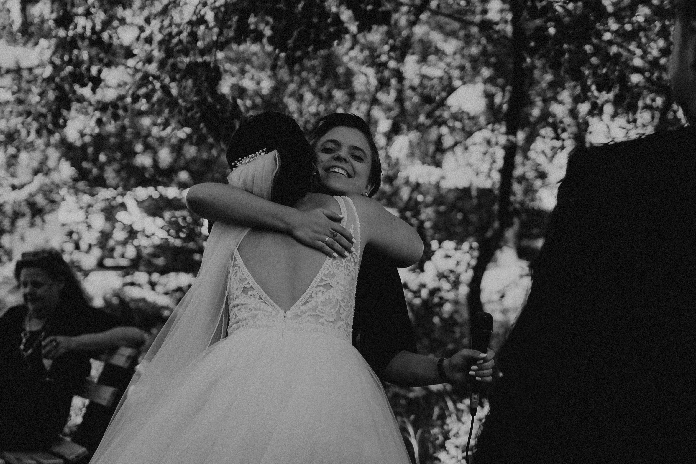

Ihr plant eure Hochzeit in Karlsruhe und sucht eine Sängerin, die diesen besonderen Moment unvergesslich macht? Ich bin Mickela Löffel – gebürtige Karlsruherin, ausgebildete Sängerin mit Bachelor der Popakademie Baden-Württemberg und bekannt aus dem Halbfinale von The Voice of Germany 2020.
Seit 2018 begleite ich Brautpaare in Karlsruhe und der Region mit emotionalen Pop-Balladen – live, mit Gefühl und aus vollem Herzen.

Warum Live-Musik für eure Karlsruher Hochzeit?
Karlsruhe ist eine Stadt mit wunderschönen Hochzeits-Locations – vom Schloss Karlsruhe über das Regierungspräsidium bis hin zu romantischen Weingütern in der Umgebung. Eine Live-Sängerin verleiht jedem dieser Orte eine ganz besondere Atmosphäre, die keine Playlist ersetzen kann.
Wenn ich singe, passiert etwas Magisches: Gäste werden still, Tränen fließen, das Brautpaar hat einen Moment ganz für sich – während alle einfach nur im Moment sind.
Mein Angebot für Hochzeiten in Karlsruhe
🎤 Solo mit Playback oder Piano
Intim, berührend und perfekt für die Trauzeremonie. Ich und meine Stimme – mehr braucht es nicht.
🎸 Mickela + Live-Musiker
Mit Gitarre oder Klavier – für mehr Klang und Tiefe beim Sektempfang oder Abendprogramm.
🎶 Rundum-Sorglos mit Band ICONICS
Von der Trauung bis zur Party – meine Band ICONICS übernimmt den kompletten musikalischen Tag.
✨ Individuelle Songauswahl
Kein festes Repertoire – wir wählen gemeinsam die Songs, die zu euch passen.
Hochzeits-Locations in Karlsruhe
Ich trete regelmäßig bei Hochzeiten in und um Karlsruhe auf – an Orten wie:
Schloss Karlsruhe · Stadtgarten · Gut Nußdorf · Weingut am Turmberg · Schloss Favorite Rastatt · Weingut Seeger Leimen · und vielen weiteren besonderen Locations in der Region.
Über Mickela Löffel
Als Karlsruherin kenne ich die Region und ihre schönsten Hochzeits-Locations bestens. Mit meinem Bachelor-Abschluss der Popakademie Baden-Württemberg (Hauptfach Gesang & Songwriting), meiner TV-Erfahrung bei The Voice of Germany und dem ZDF Fernsehgarten bringe ich professionelle Bühnenqualität zu eurer Hochzeit.
Meine Musik wird oft mit der von LEA verglichen – warm, nah, ehrlich. Genau so bin ich auch als Mensch.
Bereit für unvergessliche Musik?
Stellt mir eine unverbindliche Anfrage – ich melde mich persönlich innerhalb von 24–48 Stunden.
Jetzt unverbindlich anfragenHäufige Fragen zur Hochzeitssängerin in Karlsruhe
Wie weit im Voraus sollte ich buchen?
Mindestens 6–12 Monate vor dem Hochzeitstermin – besonders Sommerdaten sind schnell vergeben.
Singt Mickela nur in Karlsruhe?
Nein – ich bin deutschlandweit buchbar. Karlsruhe und die Region sind meine Heimat, aber ich komme auch nach Stuttgart, Mannheim, Heidelberg, Freiburg und weiter.
Was kostet eine Hochzeitssängerin in Karlsruhe?
Die Kosten hängen von Besetzung und Umfang ab. Stell gerne eine unverbindliche Anfrage für ein individuelles Angebot.